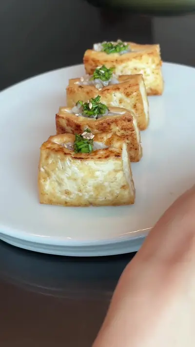

I made Tofu Pocket Balls for my one-year-old toddler’s lunch

Ingredients
- Firm tofu (extra firm tofu works better)
- Cooked rice
- Seasoning of your choice (I used regular soy sauce diluted with water) Below are the simple
Steps
- Cut tofu into pieces, and slit each piece to create an opening
- Pan fry with oil until golden brown & firm
- Put rice into each opening / pocket
- Add seasoning on top (I used chives & small portion of regular soy sauce (diluted with water) to enhance flavor)
Recipe text as written by @mini.tiger.zen on TikTok. Open original